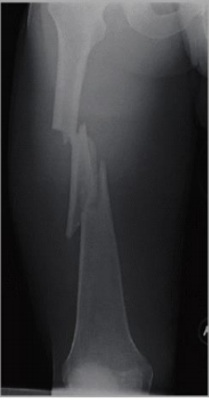
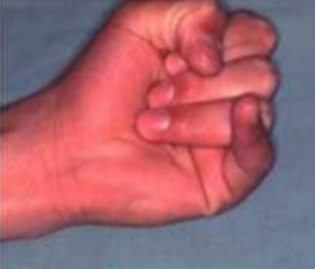
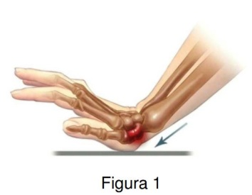
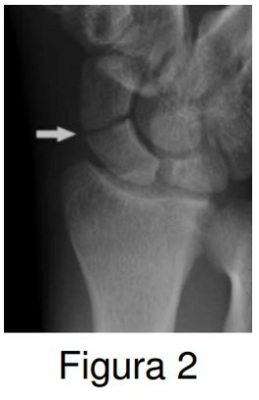
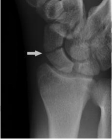
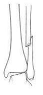
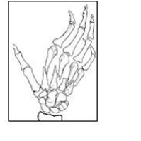

Questão 1 · Princípios de Osteossíntese · 4000127723Paciente de 69 anos, viúvo, procedente de Poloni (SP), eletricista. Diabético e hipertenso há 10 anos. Interna eletivamente para realização de artroplastia de quadril a direita. Realiza a cirurgia sem intercorrências. Os exames pós-operatórios são os seguintes: Hemoglobina: 9,8g/dL; hematócrito: 29%; Leucócitos: 10.000; Plaquetas: 176.000; Creatinina: 1,1mg/dL; K: 4,5mEq/L. O melhor plano terapêutico para esse paciente está descrito na alternativa:
A Antibiótico terapia profilática com cefazolina e utilização heparina de baixo peso molecular
B Deambulação no 2º pós-operatório, manutenção da hemoglobina acima de 9,0g/dL e programação de alta após deambulação
C Antibiótico terapia profilática com vancomicina 1g endovenoso de 12 em 12h
D Profilaxia para prevenção de TEV (tromboembolismo venoso) por 35 dias com heparina de baixo peso molecular. Completar tratamento em domicílio após a alta
Questão 2 · Fraturas da diáf ise do f êmur · 4000111304Homem, 23 anos de idade, vítima de queda de motocicleta há 2 horas. Sem outras alterações ao exame físico, exceto a fratura isolada de fêmur direito. Sem lesões vasculonervosas ou de partes moles (figura a seguir). Qual é o melhor tratamento?

A Fixador externo linear simples transarticular de joelho.
B Endoprótese de fêmur.
C Haste intramedular anterógrada de fêmur.
D Fixação com placas de titânio.
Questão 3 · Pronação dolorosa · 4000074201Menina, 3 anos é levada pelos pais à UPA (unidade de pronto atendimento), com dor no braço esquerdo, após ter sido segurada pela mão esquerda para não sair correndo. A criança está chorando e mantém o braço ao lado do corpo com a palma da mão virada para trás. Ela se recusa a levantar o braço acima da cintura e não usa a mão deste lado para pegar objetos. Indique, respectivamente, o diagnóstico mais provável e o tratamento indicado.
A Pronação dolorosa, redução.
B Fratura em galho verde, imobilização.
C Fratura do epicôndilo, imobilização.
D Sinovite do cotovelo, analgesia.
Questão 4 · Fraturas do f êmur proximal · 4000050582As fraturas de fêmur são cada vez mais frequentes e estão relacionadas ao envelhecimento populacional e à osteoporose. Sobre as fraturas de fêmur nos idosos, assinale a alternativa INCORRETA:
A As fraturas do colo do fêmur são comuns após os 70 anos e mais incidentes no sexo feminino.
B As fraturas do colo do fêmur são mais comuns que as fraturas intertrocantéricas (ou transtrocantéricas).
C As fraturas transtrocantéricas não tratadas raramente podem evoluir com necrose e pseudoartrose.
D O tratamento da fratura intertrocantérica (ou transtrocantérica) é eminentemente cirúrgico, estando o tratamento conservador restrito apenas a pacientes com risco cirúrgico elevadíssimo e/ou em estágio terminal.
Questão 5 · Fraturas do f êmur proximal · 4000024067Sobre as fraturas do fêmur, assinale a alternativa correta.
A Pacientes com fratura do colo femoral tem como característica, em inspeção, o encurtamento e rotação interna do membro fraturado.
B A evolução para osteonecrose da cabeça femoral é mais comum em fraturas do colo femoral do que em fratura transtrocantérica, mesmo com tratamento ideal.
C Na classificação da fratura de Garden de colo femoral no tipo 4 o padrão trabecular não se alinha com o do acetábulo, diferente do tipo 2 que assume uma orientação paralela.
D Nas fraturas transtrocantéricas, o iliopsoas desloca lateral e proximalmente, o trocanter menor.
Questão 6 · Entorse do joelho · 4000126160Homem, 40 anos, vem à consulta por dor no joelho esquerdo desde trauma local quando caiu de um pequeno banco na manhã de hoje. Sabendo que as Regras de Ottawa têm sensibilidade de 97% para fraturas de joelho por trauma, assinale os achados de exame físico que levariam à indicação de se solicitar radiogra a do joelho e assinale as a rmativas como verdadeira (V) ou falsa (F); ( ) Incapacidade de sustentar o peso do corpo no pé esquerdo. ( ) Incapacidade de andar 4 passos. ( ) Dor à palpação do tubérculo da tíbia. ( ) Dor à palpação da cabeça da fíbula. ( ) Dor isolada da patela à palpação. A sequência CORRETA é:
A V, V, V, F, F
B F, V, V, V, F
C F, F, V, V, V
D V, V, F, F, V
E F, V, F, V, V
Questão 7 · Entorse do tornozelo · 4000106481Qual é o ligamento mais comumente acometido em entorse do tornozelo e lesão das estruturas laterais?
A Talofibular posterior
B Calcaneofibular
C Talofibular anterior
D Tibiocalcâneo
Questão 8 · Luxação esternoclavicular · 4000060540Assinale a alternativa que apresenta, corretamente, a complicação que pode apresentar a luxação esterno-clavicular.
A Laceração de tireoide.
B Lesão da veia ázigo.
C Lesão do ducto torácico.
D Obstrução de vias aéreas.
E Rotura de aorta.
Questão 9 · Luxação glenoumeral · 4000023353Leia o caso clínico a seguir. Paciente do sexo masculino, de 20 anos, foi atendido no pronto-socorro com história de trauma em ombro direito há duas horas. Ao exame físico, apresentava dor e sinal da dragona. Refere dois episódios semelhantes nos últimos dois anos. A conduta imediata adequada, nesse caso, é:
A Radiografia de ombro para descartar fratura e redução da luxação glenoumeral.
B Imobilização com tipoia e encaminhamento ao especialista de maneira eletiva.
C Ressonância magnética de ombro para descartar lesão da musculatura do manguito rotador.
D Encaminhamento ao bloco cirúrgico para realizar a redução aberta da luxação articular.
Questão 10 · Fraturas do colo do f êmur · 4000017671Uma senhora de 82 anos, hipertensa e diabética, foi admitida em uma UPA com dor no quadril à direita, após uma queda de própria altura. No exame ela apresentava estabilidade hemodinâmica, incapacidade de deambulação e dor forte à tentativa de mobilização do quadril à direita especialmente à tentativa de rotação do membro. Foi realizado RX simples da bacia em AP além de estudo detalhado da articulação coxo- femoral acometida em AP e Per l evidenciando uma fratura de colo de fêmur sem desvio. Qual o tratamento mais adequado a essa paciente?
A Cirúrgico eletivo devido ao baixo risco de complicações.
B Conservador referindo a serviço ambulatorial de ortopedia.
C Conservador transferindo para internação em enfermaria de ortopedia.
D Cirúrgico de urgência pelo risco de necrose avascular da cabeça do fêmur.
Questão 11 · Fraturas e luxações do escaf oide e do carpo · 4000003361Sinal de Terry Thomas está presente:
A Fratura distal do Rádio
B Fratura distal da Ulna
C Deslocamento Escafosemilunar
D Fratura do Escafóide
Questão 12 · Pronação dolorosa · 4000122024Lactente, com 18 meses de idade, foi trazida pelos pais ao serviço de emergência pediátrica, chorando muito, sem mexer o braço direito. Ao exame físico, observa-se dor intensa à mobilização do cotovelo direito, sem outros sinais ogísticos e sem febre. A hipótese diagnóstica para esse caso é:
A Hemorragia intra-articular.
B Subluxação da cabeça do rádio.
C Osteocondrose da epífise do úmero.
D Ruptura do ligamento anular.
E Artrite piogênica do cotovelo.
Questão 13 · Fratura dos metacarpos · 4000071070Na fratura de Bennett, a base do metacarpo é puxada dorsalmente e radialmente pelo:
A Abdutor longo do polegar
B Flexor curto do polegar
C Adutor do polegar
D Oponente do polegar
Questão 14 · Fratura do rádio distal · 4000068665A fratura de radio distal é uma da sfraturas mais frequentes no adulto e de acordo com isto, assinale a única alternativa correta:
A As fraturas são classificadas de acordo com o acometimento exclusivamente do rádio e não leva em consideração a ulna
B As fraturas de rádio são comuns, não sendo complexas e portanto, com baixo índice de complicações
C As fraturas podem ser fixadas internamente com placa e parafusos ou através de pinagem
D Os fixadores externos não são indicados para as fraturas de terço distal de radio
E A distrofia simpático reflexa (Sudeck) não deve ser tratada durante a fase de imobilização com gesso.
Questão 15 · Fraturas e f raturasluxações dos ossos do antebraço · 4000066702A fratura da porção proximal da ulna, associada à luxação da porção proximal do rádio na articulação do cotovelo, é conhecida com fratura de:
A Colles
B Monteggia
C Smith
D Kienböer
E Galeazzi
Questão 16 · Fraturas supracondilianas do úmero · 4000047750Criança do sexo masculino, 06 anos de idade, é trazida à emergência pelos pais que relatam o menor ter caído da árvore com o cotovelo estendido. A radiogra a do cotovelo mostra uma fratura supracondiliana umeral sem contatoentre os fragmentos ósseos. Assinale a alternativa CORRETA.
A A respeito desse tipo de fratura, pode-se dizer que, quando ocorre paralisia nervosa, o nervo mais frequentemente acometido é o nervo ulnar.
B Na radiografia do cotovelo de uma criança de 06 anos de idade, espera-se visualizar os centros de ossificação secundárias da troclea e do olecrano.
C Se a fratura do tipo relatado, apresentasse contato entre os fragmentos na radiografia, seria maior a probabilidade de lesão nervosa e vascular.
D O tipo de desvio mais comum da fratura relatada é o desvio anterior do fragmento distal, visível na incidência lateral(perfil) da radiografia.
E No caso de diminuição do pulso da artéria radial, porém com a palma da mão e dos dedos rósea, a conduta imediata deverá ser a redução e a fixação da fratura.
Questão 17 · Fraturas supracondilianas do úmero · Avaliação clínica · 4000041532Durante investigação clínica de uma paciente de oito anos de idade que apresenta fratura supracondiliana do úmero esquerdo, associado com lesão neurológica, sinal de Kiloh-Nevin positivo, comprometimento dos músculo exor profundo do dedo indicador, flexor do polegar e pronador quadrado. O nervo que está comprometido neste paciente, é:
A nervo ulnar
B nervo radial
C nervo interósseo anterior
D nervo axilar
E nervo iterósseo posterior
Questão 18 · Luxação glenoumeral · 4000058512Das afirmações abaixo, assinale a única alternativa CORRETA:
A A luxação escapulo umeral posterior é a mais frequente em ocorrência dentre as luxações de ombro
B O sinal da tecla de piano está presente nas luxações escapulo-umerais.
C O sinal da dragona positivo é indicativo de luxação escapulo-umeral
D A manobra de apreensão está negativa imediatamente após a luxação de ombro
E A luxação voluntária realizada pelo pacinte é uma indicação absoluta de correção cirurgica
Questão 19 · Fraturas e Luxações · 4000058509Das alternativas abaixo, assinale a CORRETA com relação a epidemiologia das fraturas:
A A fratura de Colles ocorre no adulto jovem devido a exposição profissional
B A fratura de clavícula ocorre mais frequentemente em seu terço proximal
C A fratura de escaloide ocorre com mais frequência no idoso
D A fratura de calcâneio ocorre maus frequentemente em mulheres
E A fratura em galho verde ocorre nas crianças de baixa idade
Questão 20 · Lesão dos ligamentos colaterais · 4000058044No compartimento medial do joelho, o ligamento colateral medial, ou colateral tibial,se destaca. Ele é uma das principais estruturas lesadas. O seu mecanismo de lesão mais comum é:
A Hiperextensão do joelho.
B Trauma direto.
C rotação interna do joelho.
D Estresse em valgo.
E Trauma com a tíbia em extensão.
Questão 21 · Hepatite Fulminante Insuf iciência Hepática Aguda · Hepatite D · 4000048731Transaminases TGO e TGPAminotransf erases AST e ALT Paciente feminina, 32 anos, recebeu diagnóstico de doença de Graves há quatro meses, foi iniciado propanolol e propiltiouracil há 2 meses. Refere náuseas, dor abdominal leve, adinamia há cerca de um mês e há 7 dias aparecimento de icterícia e há 2 dias começou a apresentar agitação psicomotora e alteração do sono vigília. Nega comorbidades e uso de outras medicações. Ao exame: desorientação, icterícia ++/4, normocorada, hepatomegalia dolorosa, descompressão brusca (-), apping (+), Laboratório: Hb 11.6 g/dl; HCT: 30, Leucócitos 13.460/mm3; Plaquetas 221.000/mm3; TGO 2500 U/I, TGP 3.500 U/I; GGT: Bilirrubina total 17 mg/dl; Bilirrubina Direta 14 mg/dl; GGT 560 U/I; Albumina 2.9 g/dl; (RNI) 4.5; Creatinina 1.1 g/dl. Assinale a alternativa INCORRETA:
A O propiltiouracil pode ser a causa da hepatite da paciente e deve ser suspenso imediatamente.
B Os níveis das transaminases se correlacionam com a gravidade da doença e demonstram possível necrose hepatocelular
C A paciente apresenta falência hepática aguda e pode evoluir para a necessidade de transplante hepático.
D Vários fatores extra-hepáticos podem contribuir para a encefalopatia como hipoglicemia, hiponatremia, uremia, hipóxia e sepse.
E Vírus D pode causar falência hepática aguda quando associado com VHB.
Questão 22 · Entorse do tornozelo · 4000045707Uma jovem de 18 anos dá entrada na UPA com edema e dor no tornozelo após queda no jogo de vôlei. Ao exame há dor na mobilização do tornozelo e a paciente não suporta o peso do corpo sobre o pé. Qual a sua conduta para o caso acima:
A RNM do tornozelo
B Rx do tornozelo e imobilização com gesso
C USG do tornozelo e anti inflamatório
D Rx do tornozelo e analgésico
E USG do tornozelo e repouso
Questão 23 · Fratura da base do quinto metatarso · 4000020107Mulher, 50 anos, sofreu trauma no pé em inversão, apresentando edema e dor na base 5º metatarsiano. O radiograma mostrou uma fratura em avulsão neste nível. Qual o tendão que ocasionou esta fratura?
A Fibular superficial.
B Tibial posterior.
C Tibial anterior.
D Fibular curto.
Questão 24 · Fraturas do f êmur proximal · 4000011449Mulher de 80 anos de idade, com doença de Alzheimer avançada, foi trazida com relato de queda. No exame físico, observa-se o membro inferior encurtado e rodado lateralmente. O diagnóstico MAIS provável é:
A Fratura supracondiliana do fêmur.
B Fratura da região proximal da tíbia.
C Luxação da articulação do quadril.
D Fratura transtrocantérica do fêmur.
E Fratura da região distal da tíbia.
Questão 25 · Lesões tendíneas da mão · 4000085412Homem, 19 anos, sofre trauma com exão forçada do dedo mínimo, há 3 horas, durante partida de rugby. Apresenta dor na falange média e distal, edema e impossibilidade de realizar a exão da extremidade distal do membro, conforme a imagem abaixo (VER IMAGEM). Ao exame radiológico, não se constata fratura. O diagnóstico mais provável é de lesão do:

A Tendão flexor superficial.
B Tendão flexor profundo.
C Tendão extensor próprio do dedo mínimo.
D Músculo extensor próprio do dedo mínimo.
E Tendão flexor profundo e tendão extensor próprio do dedo mínimo.
Questão 26 · Fratura das f alanges · 4000081865Adolecente,12 anos, vem ao serviço de emergência com história de esmagamento da extremidade distal do polegar. Refere muita dor, hematoma subungueal em 100% da superfície da unha. Ao RX, há fratura da falange distal sem deslocamento dos fragmentos. Qual é a conduta mais apropriada nesse caso?
A Drenagem do hematoma subungueal e sutura da unha.
B Osteossíntese da fratura da falange distal.
C Curativo compressivo.
D Cicatrização dirigida.
Questão 27 · Lesão do tríceps sural ruptura do tendão de Aquiles · Semiologia da Perna Tornozelo e Pé · 4000097087Homem de 50 anos sentiu forte dor no tendão calcâneo direito ao iniciar uma corrida. Ao exame físico, apresenta sinal de Thompson positivo. Considerando esse quadro, assinale a posição que o paciente NÃO consegue realizar:
A Ficar na ponta do pé.
B Ficar na ponta dos calcanhares.
C Fazer a inversão do pé.
D Fazer a flexão dorsal do pé.
E Fazer a extensão dos dedos.
Questão 28 · Tipos de Fraturas · Fraturas do f êmur proximal · 4000077720Em relação às fraturas de um modo geral, assinale a alternativa correta.
A Fratura cominutiva verdadeira é aquela que possui dois ou mais fragmentos livres de periósteo.
B Nas fraturas de clavícula, a lesão da artéria axilar pode ser uma complicação imediata.
C Fraturas cominutivas da asa do ilíaco apresentam como complicação frequente a lesão do nervo ciático.
D A fratura da diáfise do fêmur via de regra provoca uma rotação externa total do membro inferior.
E Em idosos, a fratura de colo de fêmur deve ter tratamento eminentemente cirúrgico com osteossíntese imediata seguida de mobilização precoce do paciente no leito.
Questão 29 · Fraturas supracondilianas do úmero · Lesão vascular · 4000075126Um garoto de 14 anos apresenta fratura supracondiliana do úmero. Ele possui diminuição do pulso distal da fratura. Qual a artéria provavelmente lesada?
A Arterial radial
B Artéria cubital
C Artéria braquial
D Artéria subclávia
E Artérias digitais
Questão 30 · Fraturas e luxações do escaf oide e do carpo · 4000071281Paciente do sexo masculino, 25 anos de idade, sofreu queda com a mão espalmada durante jogo de futebol (Figura 1). Radiogra a do seu punho na incidência anteroposterior foi realizada no pronto-socorro (Figura 2). (VER IMAGENS). Com base nessas informações, assinale a alternativa correta.


A A incidência radiográfica ideal deve ser realizada com desvio ulnar do punho.
B Dor na tabaqueira anatômica e pistonagem positiva sugerem tenossinovite.
C O diagnóstico da fratura é precoce e as complicações são pouco frequentes.
D Quando ocorre no 1/3 distal, necrose asséptica e pseudoartrose são esperadas.
E Ressonância magnética é rotineira para avaliar a vascularização desse osso.
Questão 31 · Lesão ligamentar e meniscal do joelho · 4000060342A lesão de joelho que apresenta maior probabilidade de resultar em hemartrose em crianças e adolescentes é:
A Lesão de ligamento cruzado anterior;
B Lesão de ligamento cruzado posterior;
C Lesão de ligamento colateral medial;
D Ruptura meniscal;
E Luxação patelar.
Questão 32 · Lesão vascular · Lesão ligamentar e meniscal do joelho · 4000119900Paciente masculino, 33 anos, sofre trauma em joelho direito e evolui com lesão de ligamento cruzado anterior. Passados dois meses da correção cirúrgica do ligamento cruzado anterior apresenta: edema, dor e massa pulsátil em fossa poplítea do membro inferior direito, que se apresenta com aumento do seu volume no decorrer deste período. Ao exame clínico, o paciente apresenta pulso femoral, poplíteo, tibial posterior e pedioso palpáveis, e apresentava massa pulsátil, por volta de 7 cm de diâmetro, à palpação da fossa poplítea direita. Qual a sua hipótese diagnóstica?
A Pseudoaneurisma da artéria poplítea.
B Trombose da artéria poplítea.
C Cisto de Baker.
D Aneurisma da artéria femural profunda.
E Trombose venosa na artéria poplítea.
Questão 33 · Fraturas transtrocantéricas do f êmur · 4000106122A fratura intertrocantérica do fêmur, do tipo V de TRONZO, tem como melhor implante para fixação a:
A placa de 135° com parafuso deslizante.
B placa angulada de 135°.
C haste intramedular flexível.
D haste cefalomedular bloqueada.
Questão 34 · Fraturas supracondilianas do úmero · 4000099805A conduta imediata na fratura supracondiliana do úmero em criança, que apresenta primariamente diminuição do uxo sanguíneo distal, deve ser:
A arteriografia.
B redução fechada com fixação.
C redução aberta com fixação.
D exploração da artéria braquial.
Questão 35 · Fraturas e luxações do joelho · 4000088312Mulher, 50 anos, sofreu queda ao solo torcendo o joelho Direito (D). Ao exame físico, apresenta dor intensa, aumento significativo de volume e deformidade em varo no joelho D; edema discreto, pouca dor no pé D, que apresenta temperatura semelhante à do pé E e pulso pedioso presente nesse lado, porém fracamente palpável. O RX mostra fratura- luxação anterior tibiofemoral ao nível do joelho D, com grande fragmentação do planalto tibial. Acerca dessa situação, é CORRETO afirmar que:
A A fratura deve ser reduzida com urgência
B A luxação pode ser reduzida no mesmo momento da redução da fratura, após uma semana, tempo necessário para diminuição do edema.
C A luxação é uma urgência, devendo ser reduzida com a máxima brevidade.
D Lesões nervosas e vasculares não costumam ser graves e podem ser corrigidas eletivamente.
E A imobilização com gesso deve ser a primeira medida, devendo ser rígida, para evitar mais edema.
Questão 36 · Fraturas do f êmur proximal · 4000086730Em relação às fraturas de terço proximal de fêmur pode-se afirmar, exceto:
A As fraturas transtrocantéricas ocorrem, normalmente, em pacientes mais idosos do que as fraturas de colo de fêmur.
B As fraturas transtrocantéricas são consideradas extracapsulares e, por isso, apresentam bom prognóstico de consolidação e baixo risco de necrose avascular da cabeça femoral.
C O melhor exame para o diagnóstico das fraturas ocultas do terço proximal do fêmur é a ressonância nuclear magnética.
D A demora na realização do tratamento cirúrgico nas fraturas do terço proximal do fêmur além de 48 horas aumenta o risco de complicações clínicas, incluindo a mortalidade.
E O tratamento da maioria das fraturas transtrocantéricas é cirúrgico, e normalmente, com prótese de quadril devido à idade avançada do paciente.
Questão 37 · Fraturas diaf isárias da tíbia e dos ossos da perna · 4000086718Um lutador de artes marciais de 38 anos sofre fratura de ambos os ossos da perna esquerda durante um golpe violento e de alta energia. Ao exame físico ortopédico, observa-se deformidade angular evidente no terço médio da perna esquerda, pulsos distais presentes e não apresenta solução de continuidade na pele. O exame radiográ co evidencia desvio em varo de 10 graus no foco das fraturas e traços transversos dia sários no mesmo nível na tíbia e na fíbula. A melhor conduta terapêutica definitiva neste caso é:
A Redução incruenta e gesso cruropodálico.
B Haste intramedular bloqueada na tíbia e na fíbula.
C Haste intramedular bloqueada na tíbia e placa terço de cana na fíbula.
D Haste intramedular bloqueada apenas na tíbia.
E Haste intramedular bloqueada na tíbia e placa de compressão dinâmica na fíbula.
Revisar: possível letra faltando em enunciado
Questão 38 · Lesão do tríceps sural ruptura do tendão de Aquiles · Cirurgia · 4000086151Durante a prática de futebol, sem que houvesse ocorrido qualquer contato direto, adulto jovem hígido sentiu uma dor aguda "tipo pedrada" na região do tornozelo, com incapacidade de elevação em ponta de pé monopodial. O diagnóstico mais provável é:
A fratura do tornozelo.
B ruptura do tendão calcâneo.
C ruptura do tendão tibial posterior.
D ruptura dos ligamentos laterais do tornozelo.
E ruptura dos tendões fibulares.
Questão 39 · Fraturas do f êmur proximal · 4000069368Homem de 80 anos de idade, tabagista, com diagnóstico prévio de artrose, sofreu queda da própria altura há 5 horas, impedindo a sua deambulação. O exame físico revela encurtamento de 2 cm do membro inferior direito e postura em rotação externa do membro. O diagnóstico e as respectivas condutas diagnóstica e terapêutica serão:
A Fratura transtrocanteriana, radiografia de quadril, prótese parcial de quadril.
B Fratura de colo de fêmur, tomografia de quadril, fixação com parafusos canulados.
C Fratura de colo de fêmur, radiografia de quadril, prótese total de quadril.
D Fratura de colo de fêmur, radigrafia de quadril, tração transesquelética e repouso no leito.
E Fratura de acetábulo, tomografia de pelve, tração transesquelética.
Questão 40 · Fraturas supracondilianas do úmero · 4000050984Sobre as Fraturas Supracondilianas Umerais com desvio dos fragmentos da fratura, em crianças, leia as assertivas abaixo e assinale a correta:
A É comum que a lesão nervosa seja do tipo secção (neurotmese).
B O desvio mais comum é o anterior.
C A lesão nervosa ocorre pelo fragmento metafisário proximal da fratura.
D O mecanismo de trauma mais comum é a queda com o cotovelo em flexão.
E O hematoma na região anterior do cotovelo é causado pela rotura do músculo tríceps.
Questão 41 · Lesões tendíneas da mão · 4000025508Cássio, 20 anos, jogador de vôlei, teve um trauma na mão direita e evoluiu com dor intensa à palpação e mobilização da articulação interfalângica distal do dedo anular, edema moderado e limitação funcional. Feito diagnóstico clinicorradiológico de dedo em martelo, foi indicada cirurgia, devido ao grau de desvio com exão > 30°. Essa exão da articulação em questão deve-se à lesão:
A do ligamento triangular.
B do tendão extensor da zona I.
C do ligamento retinacular de Landsmeer.
D da cápsula articular.
Questão 42 · Fratura do rádio distal · 4000011720Um jovem de 25 anos levou uma queda durante a prática esportiva e foi atendido em uma emergência cirúrgica. Feito o exame clínico e propedêutica radiológica, foi constatada fratura distal do rádio. Qual das a rmativas abaixo contempla o tratamento por meio de redução incruenta mais imobilização?
A Fratura cominutiva metafisária.
B Fratura extra-articular estável.
C Fratura intra-articular cominutiva.
D Fratura articular marginal com subluxação radiocárpica.
Questão 43 · Fraturas do colo do f êmur · 4000122792Mulher de 85 anos teve queda da própria altura há uma hora, queixa-se de intensa dor no quadril esquerdo e grande di culdade para movimentar o membro inferior correspondente. AP: Diabetes mellitus e hipertensão arterial. Exame ortopédico: discreta rotação externa do membro inferior esquerdo e muita dor do quadril à movimentação passiva. RX da bacia: intensa osteoporose e fratura do colo do fêmur esquerdo, com acentuado desvio. O tratamento indicado é:
A tração cutânea e repouso no leito por 30 dias.
B osteossíntese do colo do fêmur com placa-parafuso deslizante.
C artroplastia do quadril.
D osteossíntese com parafusos canulados.
E osteossíntese com haste intramedular e parafuso no colo femoral.
Questão 44 · Fratura dos metacarpos · 4000066953Nos acidentes que envolvem as mãos, é frequente a ocorrência de fratura dos metacarpianos. Sobre esse assunto, assinale a alternativa CORRETA.
A A maioria das fraturas dos metacarpianos é tratada conservadoramente.
B A tomografia computadorizada é o padrão-ouro para controle após redução.
C Desvio rotacional de até 10 graus pode ser aceito como resultado final.
D O terceiro metacarpiano é o que admite maior desvio angular.
E O quinto metacarpiano é o que mais comumente sofre fratura em sua cabeça.
Questão 45 · Pronação dolorosa · 4000062719Uma criança de 2 anos de idade é levada a você porque se recusa a usar o braço direito. Há dor ao toque e ela não segura objetos com a mão esquerda. Negam trauma, mas recentemente a mãe puxou o seu braço quando ela se recusou a subir as escadas. A conduta a ser tomada no caso relatado na questão é:
A radiografia do antebraço e engessamento;
B antibióticos;
C comunicar ao Conselho Tutelar;
D referir ao ortopedista por se tratar de patologia cirúrgica;
E supinação do antebraço.
Questão 46 · Fraturas Geriátricas · Fraturas do f êmur proximal · Apresentação clínica · 4000054425É causa de fratura do colo femoral em idosos:
A Déficit cognitivo.
B Paciente institucionalizado.
C Comorbidades graves.
D Osteoporose.
E Nenhuma das alternativas anteriores está correta.
Questão 47 · Fraturas e luxações do escaf oide e do carpo · 4000031275Homem de 25 anos procura assistência médica com dor e edema na região do punho, após queda de skate. Refere ter caído com a mão estendida para trás. Foi solicitada a radiogra a reproduzida na figura abaixo. Qual o osso lesionado? (VER IMAGEM)

A Capitato.
B Navicular.
C Escafoide.
D Semilunar.
E Fusiforme.
Questão 48 · Fraturas Geriátricas · Fraturas do f êmur proximal · 4000025259Paciente com 70 anos, do sexo feminino, menopausa há 20 anos, não fez reposição hormonal e refere mãe com antecedente de fratura do colo do fêmur. É tabagista há 50 anos (20 cigarros/dia), sedentária, com cifose dorsal aumentada, história de fratura do punho direito após queda de própria altura há 15 anos e tratada com gesso, tem doença de Parkinson, sendo deambuladora domiciliar. Refere que há 12 horas sofreu queda no banheiro de sua casa, sentada, com trauma no quadril esquerdo, com dor e limitação, posição de rotação externa e encurtamento do membro inferior esquerdo, com desvio rotacional e impossibilidade de deambulação. Veio de ambulância do interior com imobilização provisória e dois exames feitos em sua cidade. Realizada hoje uma radiogra a da bacia em anteroposterior, que evidencia fratura do colo do fêmur no quadril esquerdo, com desvio dos fragmentos e desmineralização óssea difusa e uma densitometria óssea de seis meses atrás com T-score na coluna lombar de - 1,8 e no colo do fêmur direito de -1,5. No caso dessa paciente,
A a fratura prévia do punho direito não representa risco aumentado para outras fraturas, como a do colo femoral.
B o tratamento não cirúrgico com tração e imobilização é preferível ao tratamento cirúrgico devido à sua faixa etária.
C o tratamento cirúrgico com redução aberta e a fixação interna com parafusos canulados são preferíveis à artroplastia do quadril.
D o prognóstico de morrer no primeiro ano após a fratura do fêmur proximal é de 25% e de apresentar alguma difilcudade em suas atividades de vida diárias é de 80%.
Questão 49 · Anatomia do Tornozelo e Pé · 4000022843Quais os ligamentos laterais do tornozelo (complexo ligamentar lateral) são, respectivamente, o menos resistente e o mais resistente?
A fibulocalcâneo e fibulotalar anterior.
B fibulotalar posterior e fibulotalar anterior.
C fibulocalcâneo e fibulotalar posterior.
D fibulotalar anterior e fibulolatar posterior.
E fibulolatar posterior e fibulocalcâneo.
Questão 50 · Fraturas do f êmur proximal · 4000022834No tratamento de fraturas transtrocanterianas do fêmur, cominutas e decorrentes de traumas de grande energia, além das radiografias nas incidências frente e perfil, deverá(ão) ser realizada(s):
A radiografias com abdução dos quadris.
B radiografias com tração e rotação interna.
C radiografias com adução dos quadris.
D ressonância magnética.
E ultrassonografia
Questão 51 · Fraturas e luxações do escaf oide e do carpo · 4000022826As fraturas do escafoide com pior prognóstico em relação à consolidação e ao desenvolvimento de complicações são as que ocorrem no:
A terço distal e as que apresentam traço oblíquo horizontal.
B terço proximal e as que apresentam traço transverso.
C terço distal e as que apresentam traço oblíquo vertical.
D terço distal e as que apresentam traço transverso.
E terço proximal e as que apresentam traço oblíquo vertical.
Questão 52 · Lesão dos ligamentos colaterais · 4000091844Jogador de futebol pro ssional sofreu, em uma partida o cial, trauma em valgo no joelho direito que o impediu de se levantar do solo, tendo sido retirado na maca. Qual sinal, dentre os abaixo, deverá ser positivo para esse tipo de trauma?
A Teste da gaveta anterior.
B Teste da gaveta posterior.
C Teste do bocejo medial.
D Teste do bocejo lateral.
E Teste do ressalto de Macintosh.
Questão 53 · Fratura do rádio distal · 4000044137A fratura de Colles
A é, geralmente, de indicação cirúrgica.
B quando não tem indicação cirúrgica, a imobilização deve contemplar 3 posições: desvio ulnar, supinação e flexão palmar em torno de 30%.
C corresponde à subluxação da cabeça do rádio e fratura ulnar proximal.
D resulta de queda com a mão flexionada.
E é uma fratura típica da criança, predominando no sexo masculino.
Questão 54 · Lesões tendíneas da mão · 4000025584Paciente masculino, 20 anos, mão direita dominante, sofreu corte com vidro em região palmar do punho direito, há cerca de 2 horas. Ao exame, apresenta lesão de tendões exores do terceiro e quarto dedos e do nervo mediano. Qual a melhor conduta?
A Tenorrafia dos flexores e neurorrafia do nervo mediano.
B Neurorrafia do nervo mediano e colocação de rod de silicone no terceiro e quarto dedos.
C Sutura em bloco para, em um segundo tempo, realizar enxerto de tendões e nervos.
D Limpeza da ferida e surtura da pele.
E Limpeza da ferida, sutura da pele e colocação de órtese para evitar rigidez da articulação até realização de enxertos.
Questão 55 · Luxação acromioclavicular · 4000091858Homem, 27 anos, sofre queda de motocicleta com trauma em ombro E. Ao exame, apresenta dor, diminuição da abdução do braço E e sinal da tecla de piano. Qual o diagnóstico?
A Luxação escápulo-umeral E.
B Fratura do colo de úmero E.
C Fratura da escápula E.
D Luxação acrômio - clavicular E.
E Fratura avulsão do acrômio E.
Questão 56 · Contusão e luxação do cotovelo · 4000023859Tainará, 12 anos, sofreu lesão na articulação do cotovelo, após cair de um lugar cuja altura era equivalente a sua. A menina queixava-se de dor na articulação. Ao examiná-la, Dr. Emílio detectou sinovite traumática leve e limitação da mobilidade sem impotência funcional. Qual a conduta mais adequada?
A Repouso, calor local, imobilização junto ao tronco para reduzir movimentos e dor e paracetamol.
B Fisioterapia motora, aplicação de gelo, contensão elástica com acolchoamento de algodão para reduzir movimentos e dor, elevação do membro e paracetamol.
C Repouso, aplicação de gelo, contensão elástica com acolchoamento de algodão para reduzir movimentos e dor, elevação do membro e anti-inflamatórios não esteroides.
D Fisioterapia motora, calor local, contensão elástica com acolchoamento de algodão para reduzir movimentos e dor, elevação do membro e anti-inflamatórios não esteroides.
Questão 57 · Fraturas da diáf ise do f êmur · 4000010883Paciente, 28 anos, sem doenças associadas, submetido à cirurgia de correção de fratura de fêmur. Foi realizada quanti cação de hemoglobina no intraoperatório, o resultado foi 8,2 g/dl, a pressão arterial é de 110 x 75 mmHg e a frequência cardíaca é de 92 bpm. Qual a melhor conduta neste caso?
A Transfundir uma unidade de concentrado de hemácias.
B Transfundir duas unidades de concentrado de hemácias.
C Transfundir três unidades de concentrado de hemácias e uma unidade de plasma fresco.
D Transfundir duas unidades de concentrado de hemácias, um plasma fresco e dez unidades de plaquetas.
E Não está indicada hemotransfusão.
Questão 58 · Fraturas do tornozelo · 4000010645Paciente masculino, 19 anos, durante jogo de futebol apresentou um trauma no tornozelo por um mecanismo de pronação – abdução, há 2 horas. Ao exame nota-se grande edema no tornozelo, dor e equimose ao nível do maléolo interno, e dor no 1/3 distal da perna em sua face lateral. A figura abaixo (VER IMAGEM) representa o exame radiográ co. Qual o diagnóstico e o tratamento mais adequados?

A Luxação do tornozelo - redução incruenta e bota gesso.
B Fratura da tíbia - haste intramedular bloqueada.
C Fratura, e luxação do tornozelo - redução incruenta.
D Pseudartrose da fíbula - enxerto ósseo e bota gesso.
E Fratura maleolar tipo C (Weber/AO) – cirurgia.
Revisar: possível letra faltando em enunciado
Questão 59 · Fraturas do Úmero · 4000116809São indicações de tratamento cirúrgico das fraturas diafisárias do úmero, exceto:
A fraturas expostas.
B politraumas.
C paralisia do nervo radial.
D fraturas associadas do antebraço.
E fraturas associadas a lesão vascular do braço.
Questão 60 · Fraturas e luxações do escaf oide e do carpo · 4000110944Paciente adulto que sofreu queda com a mão espalmada e apresenta-se com edema mínimo no punho, sinal da pistonagem positivo e radiografia normal é portador de:
A Fratura do rádio distal sem desvio.
B Fratura da base do 1o metacarpiano sem desvio.
C Entorse do punho.
D Fratura do escafóide sem desvio.
E Lesão ligamentar do punho.
Questão 61 · Entorse do tornozelo · 4000104232Durante jogo de futebol, rapaz de 22 anos de idade sofre traumatismo com inversão de tornozelo esquerdo e é levado ao pronto-socorro. Quatro horas após o trauma, apresenta claudicação antálgica, edema moderado do tornozelo e dor à palpação na região distal ao maléolo lateral de moderada intensidade. Refere-se dor tolerável ao apoiar o pé no chão e ao fazer a dorsoflexão e flexão plantar forçada do tornozelo. A conduta é:
A Encaminhar para sutura cirúrgica dos ligamentos lesados.
B Realizar RX, pois a associação de fratura neste tipo de trauma é muito frequente e, se isso ocorreu, o atendimento deve ser imediato.
C Anti-inflamátorios e imobilização, com ou sem tala gessada, na fase inicial e reabilitação assim que a fase aguda ceder, pois trata-se de uma entorse leve do tornozelo.
D Imobilização com gesso, sem apoio de carga, por 6 semanas, até a cicatrização completa dos ligamentos.
Questão 62 · Lesão ligamentar e meniscal do joelho · 4000086340Homem com 22 anos procura atendimento por sentir dor no joelho direito. Refere que o quadro iniciou há 2 semanas, após uma partida de futebol, e informa uma sensação de instabilidade do membro inferior direito. A dor não se intensi ca com a manobra da gaveta anterior. Qual a causa mais provável?
A Lesão do ligamento cruzado anterior.
B Lesão do ligamento colateral medial.
C Lesão do ligamento colateral lateral.
D Laceração do menisco.
E Síndrome patelar dolorosa.
Revisar: possível letra faltando em enunciado
Questão 63 · Fraturas supracondilianas do úmero · 4000066741Por que em uma fratura supracondiliana do úmero, a redução tem caráter de urgência?
A Pela intensidade da dor.
B Por poder haver comprometimento do feixe vasculonervoso.
C Pela deformidade em varo.
D Pela deformidade em valgo.
Questão 64 · Fraturas do colo do f êmur · Cirurgia · 4000065352Quanto à anatomia patológica das fraturas do colo do fêmur, é CORRETO afirmar:
A As fraturas subcapitais e mediocervicais são intracapsulares.
B A principal irrigação da cabeça do fêmur é feita pelos vasos retinaculares que penetram pela cabeça.
C Quanto mais proximal for a fratura melhor será o prognóstico.
D As fraturas basocervicais são mal vascularizadas.
E As fraturas com traços intrarticulares têm bom prognóstico.
Questão 65 · Entorse do tornozelo · 4000055909Paciente de 35 anos de idade, sexo masculino, deu entrada no serviço de emergência referindo que ao jogar futebol torceu o tornozelo direito. Ao exame, ele apresentava um edema acentuado com equimoses no bordo externo do tornozelo; dor importante e impotência funcional do membro inferior direito. Na radiogra a do tornozelo se observa uma fratura por avulsão do maléolo fibular. Em relação a este caso, assinale a alternativa correta:
A Este tipo de lesão deve ser considerado como entorse grau I
B Pela fratura em avulsão o entorse deve ser considerado grau III
C Considera-se este tipo de lesão como uma distensão muscular
D O entorse deve ser classificado como grau II pela pequena instabilidade
E O mais importante é realizar um exame de Ressonância Magnética, pois os dados apresentados são insuficientes para julgar o caso
Questão 66 · Fraturas e luxações do pé · 4000018800Paulo, 22 anos, pedreiro, procurou seu médico de família com queixa de dor intensa há 1 hora no hálux do pé esquerdo. Relata que um tijolo caiu de sua mão atingindo a unha do hálux. Ao examiná-lo, o médico constatou hematoma subungueal. Qual o tratamento mais adequado para Paulo?
A Descompressão do espaço subungueal, perfurando a unha com agulha;
B Remoção da unha, após bloqueio anestésico;
C Tratamento sintomático, com analgésico endovenoso;
D Tratamento sintomático, com analgésico oral.
Questão 67 · Fratura dos metacarpos · 4000014475Paciente masculino, 28 anos, jogador pro ssional de futebol, após trauma há 4 horas,apresenta dor e grande edema e equimose na mão. O Rx da mão em oblíqua encontra-se ao lado. Escolha respectivamente o diagnóstico e o tratamento atual. (VER IMAGEM)

A fraturas múltiplas dos metacarpianos, síntese com placas e parafusos
B fratura de Bennet + luxação metacarpos, redução e fixação com fios de Kirschner
C fratura – luxação do punho, redução incruenta + luva de gesso
D fratura de Rolando+ fratura de metacarpo, luva de gesso
E fratura do escafoide + fratura de metatarsianos, síntese com fios de Kirschner
Questão 68 · Fraturas do Úmero · Fraturas supracondilianas do úmero · 4000007627Na fratura supracondiliana de cotovelo em crianças, tipo I de Gartland sem desvio, o tratamento inicial na urgência é:
A Tala gessada axilopalmar com cotovelo em flexão de 90°
B Tala gessada axilopalmar com cotovelo em extensão
C Gesso circular axilopalmar com cotovelo em flexão de 90°
D Gesso axilopalmar com cotovelo em flexão de 80°
E Tala gessada axilopalmar com cotovelo em flexão de 80°
Questão 69 · Lesão do ligamento cruzado anterior · 4000120082Homem com 23 anos de idade, refere entorse do joelho direito jogando futebol. Queixa-se de dor, edema e incapacidade de apoiar o pé direito no chão. Refere ter escutado um estalo na hora do entorse do joelho direito. Na punção dessa articulação, encontramos hemartrose. Radiografias do joelho sem sinais de fratura . Qual é a hipótese diagnóstica?
A lesão do menisco medial.
B lesão do menisco lateral.
C lesão do ligamento cruzado anterior.
D lesão do ligamento colateral medial.
E lesão do ligamento cruzado posterior.
Questão 70 · Pronação dolorosa · 4000120073Paciente, com 2 anos de idade, sexo feminino, com queixa de dor e perda de força no membro superior direito há uma hora. Mãe refere que a criança ia que ela a segurou pelo antebraço. Observa-se o antebraço em extensão e pronado. Qual deve ser tratamento?
A Redução cruenta no centro cirúrgico e fixação com fios de Kirshner.
B Redução cruenta no centro cirúrgico e fixação com placa.
C Redução incruenta no pronto socorro e tala axilo-palmar.
D Redução incruenta no centro cirúrgico e fixação com fios de Kirshner.
E Redução incruenta no pronto socorro e orientações aos pais.
Questão 71 · Fraturas supracondilianas do úmero · 4000118108O desvio mais comum nas fraturas supracondilianas de úmero em crianças é:
A Póstero-medial.
B Póstero-lateral.
C Ântero-medial.
D Ântero-lateral.
E Anterior.
Questão 72 · Fraturas diaf isárias da tíbia e dos ossos da perna · Entorse do tornozelo · 4000081813Paciente masculino 21 anos, é trazido ao pronto-atendimento após impacto em região pré-tibial e tornozelo esquerdo. Ao exame físico da região pré-tibial observa-se: dor e crepitação óssea à palpação e deformidade óssea visível. No exame do tornozelo observa-se: dor, aumento de volume local e acentuada limitação funcional. Não houve possibilidade de verificar a mobilidade para o lado contrário do ligamento pela dor informada. Assinale a alternativa que contém os diagnósticos atribuídos a cada parte afetada e manejo inicial.
A Contusão da região pré-tibial e tornozelo. O manejo inicial consta de repouso, aplicação de gelo, contenção elástica anti-inflamatório não esteroides.
B Fraturas em ambas topografias. Fazer exame radiográfico para confirmação diagnóstica e planejar a forma de tratamento da fratura.
C Entorse de joelho e tornozelo. Analgesia e proteção das articulações.
D Fratura da tíbia. Obter duas incidências radiográficas (frente e perfil) abrangendo as articulações proximal e distal. Entorse do tornozelo. Confirmar se houve ruptura parcial de ligamento para definir o tipo de imobilização. Manter repouso e aplicação de gelo.
E Contusão na região pré-tibial e entorse do tornozelo. Repouso, aplicação de gelo, contenção elástico e anti- inflamatório não esteroides.
Questão 73 · Fraturas supracondilianas do úmero · Principais f raturas associadas · 4000015611Nas fraturas supra condilianas do úmero, pode ocorrer como complicação, uma lesão nervosa. Qual o nervo que é o mais comumente acometido nesse tipo de complicação?
A Nervo axilar.
B Nervo mediano.
C Nervo ulnar.
D Nervo radial.
E Nervo cutâneo lateral do antebraço.
Questão 74 · Fraturas do f êmur proximal · 4000050551Na fratura do colo do fêmur no adulto, o fator determinante para a estabilidade e o restabelecimento do suplemento sanguíneo a cabeça femoral é:
A transfusão sanguínea.
B qualidade da redução.
C ressecção dos fragmentos desviados.
D tratamento cirúrgico em menos de 2 horas.
E idade do paciente.
Questão 75 · Lesão do tríceps sural ruptura do tendão de Aquiles · 4000003353Um cidadão de 55 anos de idade estava caminhando e abruptamente sentiu dor forte na panturrilha direita, impedindo a marcha. Adentrou ao hospital após 40 minutos. Apresentava dor e aumento do diâmetro da musculatura da panturrilha direita em comparação com a esquerda. Todos os pulsos estavam presentes e normais. O possível diagnóstico e a conduta apropriada são: Respostas: 1 12 23 34 45 56 67
A Trombose venosa aguda da panturrilha/internar e prescrever heparina 30 000 UI a cada 24 horas.
B Rotura de veia ou de fibras musculares/prescrever antiinflamatório e repouso relativo.
C Embolia de artérias musculares da panturrilha/realizar arteriografia femoral para diagnóstico.
D Quadro inicial de celulite de perna/prescrever antibiótico e analgésico.
E Fratura patológica sem desvio ósseo/analgésico e colocar tala gessada.